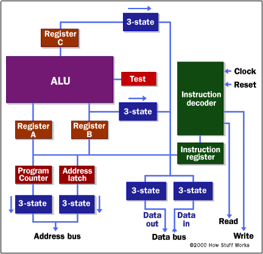
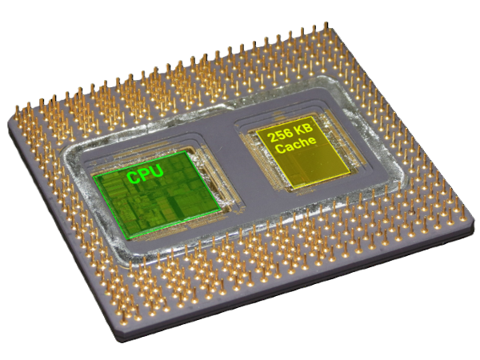

La organización del procesador se refiere a cómo se estructuran los elementos internos del CPU y cómo interactúan para ejecutar instrucciones. Cada componente cumple una función específica dentro del flujo de procesamiento, contribuyendo al movimiento de datos, la coordinación de señales y la realización de operaciones lógicas y aritméticas.

La Unidad de Control dirige el comportamiento interno del CPU analizando la instrucción que proviene del registro correspondiente. A partir de esa información genera señales que indican qué operación realizar, cuáles registros deben activarse y qué rutas seguirán los datos.
Su función es asegurar que cada paso de la instrucción ocurra en el orden correcto, coordinando tiempos, habilitando módulos y manteniendo la sincronización del procesador. Sin esta unidad, las partes internas no podrían actuar de manera organizada.
La ALU se encarga de realizar operaciones aritméticas como sumas y restas, y operaciones lógicas como comparaciones y evaluaciones booleanas. Sus resultados afectan directamente las banderas del CPU, que reflejan condiciones como acarreo, signo u overflow.
Este módulo trabaja a gran velocidad, recibiendo datos desde los registros y enviando los resultados a la unidad correspondiente. Su eficiencia es clave para el rendimiento general del sistema, ya que interviene en prácticamente todas las instrucciones.
Los registros son espacios de almacenamiento de acceso inmediato que guardan datos temporales e información necesaria para ejecutar instrucciones. Debido a su rapidez, permiten que el CPU opere sin depender constantemente de la memoria principal.
Entre sus funciones se incluye mantener direcciones de memoria, almacenar resultados parciales y conservar la instrucción actualmente procesada. El acceso directo a estos valores reduce tiempos de espera dentro del ciclo de instrucción.
Los buses internos son las líneas de comunicación que permiten el traslado de señales, datos y direcciones dentro del procesador. Su diseño define cuánta información puede transportarse simultáneamente.
Están divididos en buses de datos, de direcciones y de control, cada uno con una función específica que asegura el movimiento correcto de la información entre las distintas unidades del CPU.

La caché es una memoria interna de alta velocidad diseñada para almacenar datos e instrucciones que se usan con frecuencia. Su objetivo es reducir la necesidad de acceder a la memoria RAM.
Se organiza por niveles, cada uno con diferente tamaño y velocidad. Al anticipar qué información será requerida próximamente, disminuye la latencia y mejora el desempeño general del procesador.
1. La Unidad de Control interpreta la instrucción y activa las señales que permiten que los registros obtengan datos y que la ALU realice las operaciones necesarias. Cada módulo responde a estas señales para cumplir su función dentro del ciclo de ejecución.
2. Los registros proporcionan los valores que la ALU utilizará, mientras que los buses trasladan la información entre las distintas unidades. Este intercambio continuo mantiene el flujo de datos en el interior del CPU.
3. La caché acelera el acceso a instrucciones y datos frecuentes, reduciendo el tiempo que el procesador necesita para obtener información externa. En conjunto, estos elementos permiten que el CPU ejecute cada instrucción de forma rápida y coordinada.